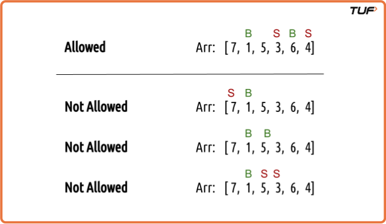
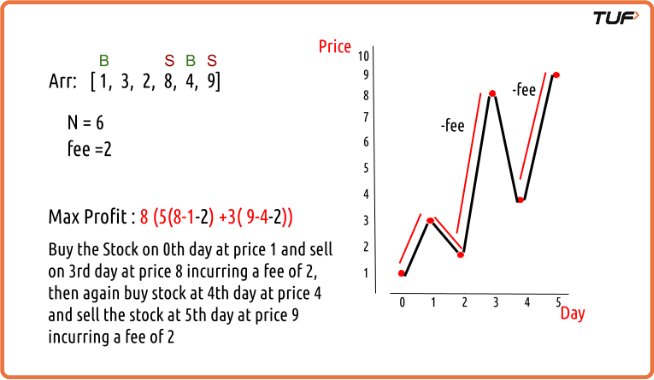
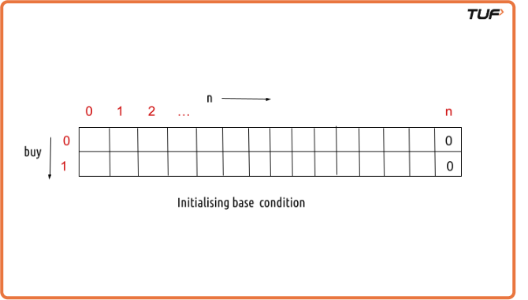
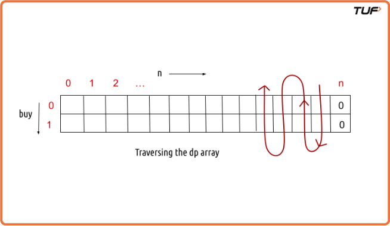
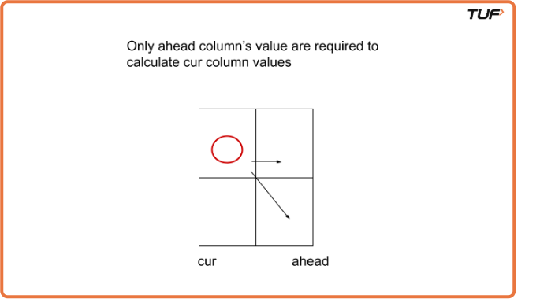

Buy and Sell Stocks With Transaction Fees | (DP - 40)
We are given an array Arr[] of length n. It represents the price of a stock on ‘n’ days. The following guidelines need to be followed:
- We can buy and sell the stock any number of times.
- In order to sell the stock, we need to first buy it on the same or any previous day.
- We can’t buy a stock again after buying it once. In other words, we first buy a stock and then sell it. After selling we can buy and sell again. But we can’t sell before buying and can’t buy before selling any previously bought stock.
- After every transaction, there is a transaction fee (‘fee’) associated with it.

Examples
Example 1: Array=[1, 3, 2, 8, 4, 9] N=6 Fee=2 Max Profit=8 (5(8-1-2)+3(9-4-2)) Explanation: Buy the stock on 0th day at a price of 1 and sell on the 3rd day at a price 8 incurring a fee of 2, then again buy stock at 4th day at a price 4 and sell the stock at 5th day at price of 9 incurring a fee of 2.

Disclaimer: Here is the practice link to help you assess your knowledge better. It's highly recommend trying to solve it before looking at the solution.
Memoization Approach
Algorithm
Each day gives two choices, either do nothing and continue, or take an action based on what was done last. We aim to explore all possible paths to find the highest profit, using recursion to try each path.
We think in terms of passing through each day. On any given day, we may be in a state where we're allowed to buy or we must sell before buying again. This helps us decide what action is allowed.
If we're allowed to buy, we can either:
- Skip buying and move to the next day, gaining nothing now.
- Buy the stock, which costs money, this reduces our total profit. The next opportunity will then be a chance to sell.
If we must sell before buying again, we can either:
- Skip selling and move to the next day. Nothing changes.
- Sell the stock, which adds to our profit. After selling, we’re again allowed to buy. A transaction fee is subtracted at this point because the complete transaction is now done.
Buying and selling together count as one full transaction. The fee is only subtracted after the selling part.
We always look to choose the option that gives the higher profit.
Code
#include <bits/stdc++.h>
using namespace std;
class Solution{
int getAns(vector<int> &Arr, int ind, int buy, int n, int fee, vector<vector<int>> &dp) {
// Base case: If we've reached the end of the array, return 0 profit.
if (ind == n) return 0;
// Check if the result is already computed
if (dp[ind][buy] != -1)
return dp[ind][buy];
int profit;
if (buy == 0) { // We can buy the stock
profit = max(0 + getAns(Arr, ind + 1, 0, n, fee, dp), -Arr[ind] + getAns(Arr, ind + 1, 1, n, fee, dp));
}
if (buy == 1) { // We can sell the stock
profit = max(0 + getAns(Arr, ind + 1, 1, n, fee, dp), Arr[ind] - fee + getAns(Arr, ind + 1, 0, n, fee, dp));
}
// Store the computed profit in the DP array
return dp[ind][buy] = profit;
}
int maximumProfit(int n, int fee, vector<int> &Arr) {
vector<vector<int>> dp(n, vector<int>(2, -1));
if (n == 0) return 0; // Edge case: No stocks to trade.
int ans = getAns(Arr, 0, 0, n, fee, dp);
return ans;
}
int main() {
vector<int> prices = {1, 3, 2, 8, 4, 9};
int n = prices.size();
int fee = 2;
cout << "The maximum profit that can be generated is " << maximumProfit(n, fee, prices) << endl;
return 0;
}Complexity Analysis
Time Complexity: O(N*2). There are N*2 states therefore at max ‘N*2’ new problems will be solved and we are running a for loop for ‘N’ times to calculate the total sum.
Space Complexity: O(N*2) + O(N). We are using a recursion stack space(O(N)) and a 2D array O(N*2).
Tabulation Approach
Algorithm
- We shift from the earlier approach to a version that fills up values directly in a table instead of relying on recursive calls. This table is set up to store outcomes for every day and decision state, just like before. We fill it step by step starting from the end.
- At the very end when no days are left there’s nothing more to earn. So the entries in the final row of the table are all zero.

- We then move backward, day by day, and for each day, we check both options whether we’re allowed to buy or not. For every such case, we fill in the table with the best profit possible by comparing available choices, just like we did in the recursive approach.

- Once all entries are filled, the final answer is simply the value in the top-left of the table that is, starting from the first day in the state where buying is allowed.
Code
#include <bits/stdc++.h>
using namespace std;
class Solution{
int maximumProfit(int n, int fee, vector<int>& Arr) {
if (n == 0) return 0; // Edge case: No stocks to trade.
// Create a 2D DP array with dimensions (n+1) x 2, initialized to 0
vector<vector<int>> dp(n + 1, vector<int>(2, 0));
// Loop through the stock prices from the end to the beginning
for (int ind = n - 1; ind >= 0; ind--) {
for (int buy = 0; buy <= 1; buy++) {
int profit;
if (buy == 0) { // We can buy the stock
profit = max(0 + dp[ind + 1][0], -Arr[ind] + dp[ind + 1][1]);
}
if (buy == 1) { // We can sell the stock
profit = max(0 + dp[ind + 1][1], Arr[ind] - fee + dp[ind + 1][0]);
}
dp[ind][buy] = profit;
}
}
return dp[0][0]; // Return the maximum profit for buying.
}
int main() {
vector<int> prices = {1, 3, 2, 8, 4, 9};
int n = prices.size();
int fee = 2;
cout << "The maximum profit that can be generated is " << maximumProfit(n, fee, prices) << endl;
return 0;
}Complexity Analysis
Time Complexity: O(N*2). There are two nested loops that account for O(N*2) complexity.
Space Complexity: O(N*2). We are using an external array of size ‘N*2’. Stack Space is eliminated.
Space Optimization Approach
Algorithm
- We observe that to determine the outcome for any day and decision, we only need the outcomes from the immediate next day. That means we no longer need the full table; we can work with just one set of values at a time.
- This allows us to optimize space by keeping only what’s needed the next day's outcomes and updating the current ones based on them.

- We begin by setting everything at the end when no days are left to zero.
- Then, day by day in reverse, we update the current values by checking the best possible option for each decision, using the information from the next day.
- After processing each day, we move forward by treating the just-calculated values as the new reference for the next step.
- The final result is what we get for the very first day when we’re allowed to start trading.
Code
#include <bits/stdc++.h>
using namespace std;
class Solution{
int maximumProfit(int n, int fee, vector<int>& Arr) {
if (n == 0) return 0; // Edge case: No stocks to trade.
vector<long> ahead(2, 0); // To track maximum profit one step ahead
vector<long> cur(2, 0); // To track current maximum profit
// Initialize both ahead[0] and ahead[1] to 0 as the base condition
ahead[0] = ahead[1] = 0;
long profit;
for (int ind = n - 1; ind >= 0; ind--) {
for (int buy = 0; buy <= 1; buy++) {
if (buy == 0) { // We can buy the stock
profit = max(0 + ahead[0], -Arr[ind] + ahead[1]);
}
if (buy == 1) { // We can sell the stock
profit = max(0 + ahead[1], Arr[ind] - fee + ahead[0]);
}
cur[buy] = profit;
}
ahead = cur;
}
return cur[0]; // Return the maximum profit for buying.
}
int main() {
vector<int> prices = {1, 3, 2, 8, 4, 9};
int n = prices.size();
int fee = 2;
cout << "The maximum profit that can be generated is " << maximumProfit(n, fee, prices) << endl;
return 0;
}Complexity Analysis
Time Complexity: O(N*2). There are two nested loops that account for O(N*2) complexity
Space Complexity: O(1). We are using an external array of size ‘2’.